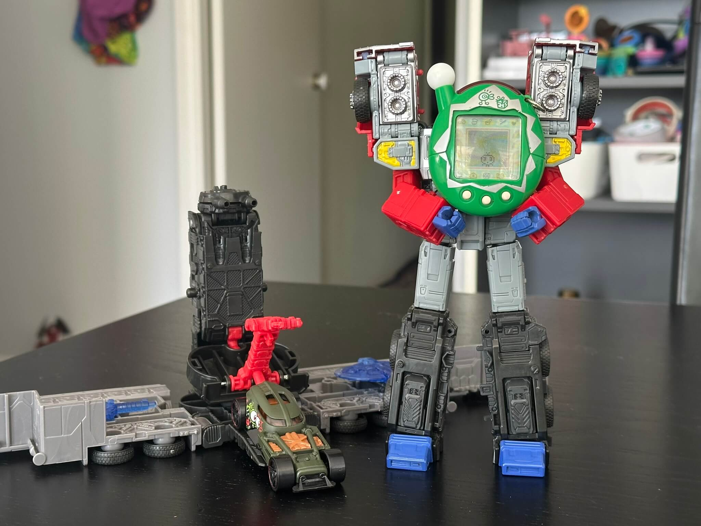

emjay • fish
Week 3: Birthday Bonanza
We reached week three! I guess this is officially (?) a weekly blog now. Today also happens to be my birthday, so that's neat. This week features a lot of my personal favourites, which seemed like a good idea 6 days ago, but probably means less interesting (to me) toys coming up for future weeks. Oops! It's my birthday, I'm allowed to treat myself. Let's go!
Tamagotchi of the Week:
Chou Jinsei Enjoi! Tamagotchi Plus (Entama) — Winter 2-Pack (Green)
Released December 2005
Name: ミンツィー (Minty)
The Entama! I grew up on the Connection Version 4, and this is more or less the Japanese equivalent, noteworthy because of its introduction of GUTS points, which replaced the primarily care-based method of determining which character you ended up with. This is my first time running an Entama, and it really captivated me, I love this little device. Thanks to a late start I didn't quite get it to reach adult stage, but based on its GUTS points it would have ended up as Furawatchi, one of my favourite characters :) This shell is part of a Christmas-themed two pack, hence the gift box, but I think the name Minty fits better, since the silver/white accents remind me of an after dinner mint.
Transformer of the Week:
Legacy United G2 Universe Laser Optimus Prime
Released 2022
Designed by Hisashi Yuki, Lenny Panzica, Emiliano Santalucia & AJ Piejko-Brown (packaging)
This Optimus is actually one of the most recent additions to my collection, after a certain partner decided to surprise me with one after I went through a particularly bad few days. Get you a partner who surprises you with Transformers ;) I love the vehicle mode, but is that really a surprise? As a truck person, it's a truck, so I love it. The deco is lovely, I was originally planning on buying a Scourge mouldmate of this, but I think I prefer the black and red that good ol' Optimus has going. The flames are a nice nod to the 2007 film, making this particular deco a tasteful mixture of a few different iterations of Optimus' paint scheme. A surprise, to be sure, but a welcome one.
Hot Wheels of the Week:
HW50 Concept — Satin Dark Green
Released 2025
Designed by Jun Imai, Dmitriy Shakhmatov & Omar Rehman
Toy number FJW02
Maybe it's the seven year old in me, but I just think this car looks so cool! Designed in 2018 for Hot Wheels' 50th anniversary, the HW50 is a very Hot Wheels-y Hot Wheels, based a little in reality but totally fictional as a whole. It's a neat dragster with a monster engine out front, and I think this particular colour scheme adds to the charm. The matte green finish tied with the red outlines on the wheels really makes this thing pop. The windows though? Totally impractical. Rear visibility? Zero. Best hope you don't have to do a reverse parallel park in this thing.
Bread Tag of the Week:
Porrectofrontus rubikarloffia — white
Manufactured by Kwik Lok
Manufacturer code JW-NRP TGR-4
Whoa, this is a long bread tag! Yep, that's why I love them. While most bread tags are the square shape you'd expect, some are bigger and longer, either long and skinny like this one, or really big and chunky like some other species we'll come across in the future. This is one of the first long species I encountered, and it's a nice one to start with. It's reminiscent of the ubiquitous Palpatophora utiliformis, but stretched out! A nice way to dip your toe into the long bread tag waters.
Trucksim Mod of the Week:
ATS Toll IPEC Paint Job Pack
Released June 2019
IPEC was an Aussie transport company, the Interstate Parcel Express Company, which was acquired by road giant Toll in the 90s to form the Toll IPEC brand.
They're a rare sight on the roads nowadays, the brand having been folded into Toll Global Express, but I always loved seeing them around as a kid. The always sun-faded yellow
just really spoke to the typical Aussie truck — a workhorse shuttling back and forth, battling the elements and keeping the country moving.
You can grab it on Steam Workshop or
TruckyMods!
And so ends week three. I've got momentum now, this blog has bright days ahead of it methinks. I couldn't quite fiddle with the Transformer this week, since Prime was too big to neatly fit on my desk, but otherwise I enjoyed everything this week had to bring. See you next time!